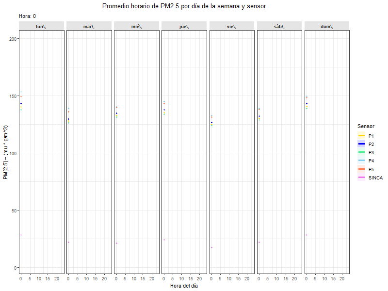
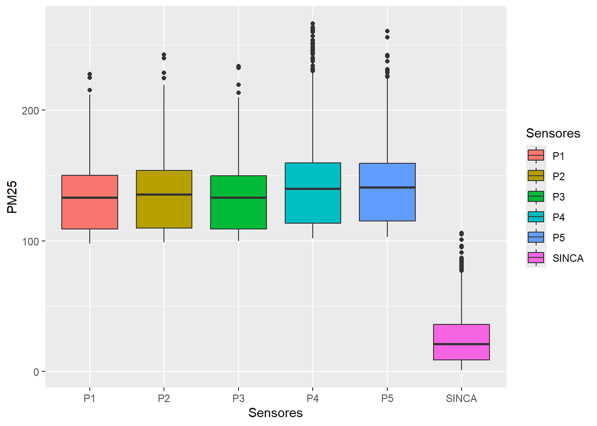
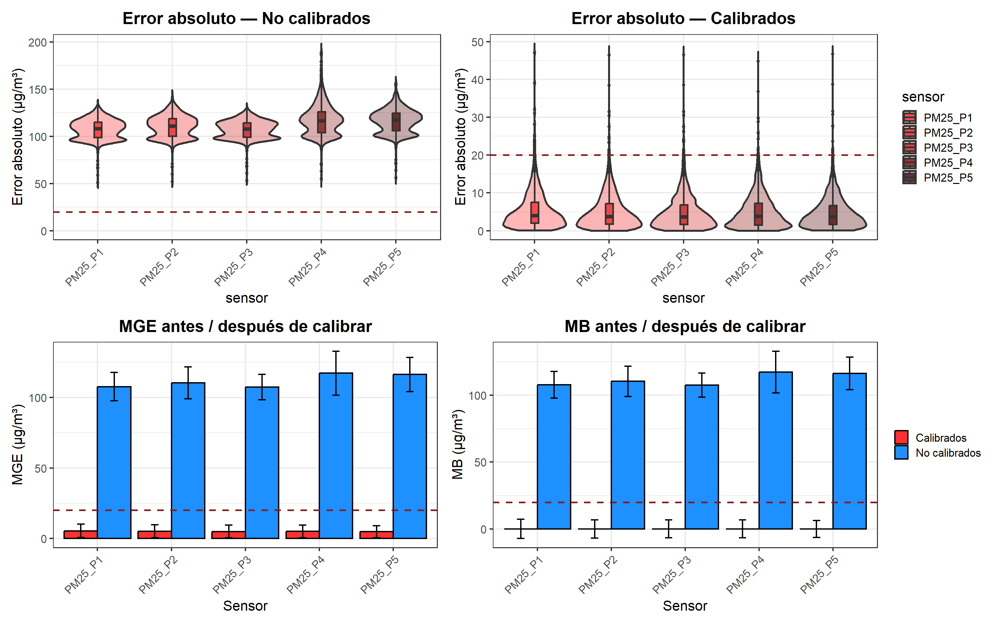

El Sistema de Información Nacional de Calidad del Aire(SINCA) presenta con aproximadamente 12 estaciones de monitoreo en la ciudad, lo que limita la determinación espacial de los contaminantes y, por ende, la estimación de la exposición real de la población. https://sinca.mma.gob.cl/.
Sensores de bajo costo
Los sensores de bajo costo para medir la concentración de material particulado han tenido una gran aceptación en los últimos años debido a su bajo costo, accesibilidad y reducido consumo energético. Los sensores que se utilizarán en este estudio corresponden al modelo Plantower; para más información, puede visitarse el sitio oficial del fabricante https://www.uradmonitor.com/compact-pm-sensors-plantower-pmsa003/.
Sensor Plantower
Gráfico de tendencia temporal
Para verificar el comportamiento de los sensores y compararlos con los monitores de referencia (SINCA), se realiza un gráfico de tendencia temporal.
Mostrar código
# Cargar librerias -----------------------------------------------------library(dplyr) library(tidyr) library(rlang) library(ggplot2)library(gganimate)library(dplyr)#Cargar datos -----------------------------------------------------Condes_Plantower_SINCA_long3 <-read.csv2("C:/Semestre 2-2025/Visualizacion/Página web/Pagina web/Datos/Condes_Plantower_SINCA_long3.csv",header =TRUE)# Funcion para calcular las concentraciones semanalesCondes_summary_pm25 <-function(datos, tiempo, pm_col ="value") { datos %>%group_by(across(all_of(tiempo)), sensor) %>%# La funcion fue realizada para cada sensorsummarise(n =sum(!is.na(.data[[pm_col]])), # Para determinar los datos válidosmean =mean(.data[[pm_col]], na.rm =TRUE),sd =sd(.data[[pm_col]], na.rm =TRUE),se =ifelse(n >1, sd /sqrt(n), NA_real_),ymin = mean -1.96* se,ymax = mean +1.96* se,.groups ="drop" )}# Resumenes por dia de la hora y por dia de la semanahour_wday <-Condes_summary_pm25(Condes_Plantower_SINCA_long3, c("wday", "hour"),"value_PM25")hour <-Condes_summary_pm25(Condes_Plantower_SINCA_long3, "hour", "value_PM25")wday <-Condes_summary_pm25(Condes_Plantower_SINCA_long3, "wday", "value_PM25")# Especificar ordenhour_wday <- hour_wday %>%mutate(wday =factor( wday,levels =c("lun\\,","mar\\,","mié\\,","jue\\,","vie\\,","sáb\\,","dom\\," ) ) )# Grafico de variacionvariacion <-ggplot( hour_wday,aes(x = hour, y = mean, color = sensor, fill = sensor, group = sensor)) +geom_ribbon(aes(ymin = ymin, ymax = ymax), alpha =0.15, colour =NA) +geom_line(linewidth =1.4) +geom_point(size =1.3, show.legend =FALSE) +facet_wrap(vars(wday), nrow =1) +labs(x ="Hora del día",y =expression(PM[2.5]~(mu*g/m^3)),color ="Sensor",fill ="Sensor",title ="Promedio horario de PM2.5 por día de la semana y sensor",subtitle ="Hora: {frame_along}" ) +scale_color_manual(values =c("P1"="gold","P2"="blue","P3"="#4EEE94","P4"="#87CEEB","P5"="coral","SINCA"="#EE7AE9" ) ) +scale_fill_manual(values =c("P1"="gold","P2"="blue","P3"="#4EEE94","P4"="#87CEEB","P5"="coral","SINCA"="#EE7AE9" ) ) +theme_bw() +theme(legend.position ="right",plot.title =element_text(hjust =0.5, face ="bold"),strip.background =element_rect(fill ="grey90", color =NA),strip.text =element_text(face ="bold"),axis.text.x =element_text(angle =0, hjust =0.5) ) +transition_reveal(along = hour)
Mostrar código
knitr::include_graphics("variacion.gif")

Se muestra que existe un defase entre los valores de concentración de los sensores de bajo costo (P1, P2, P3, P4, P5) en compración con las concentraciones de PM2.5 del SINCA
Calibración de los sensores plantower
Una de las principales desventajas del uso de sensores de bajo costo como complemento de la red actual de monitoreo es que tienden a sobrrestimar los valores de concentracion debido a fluctuaciones de las condiciones ambientales como la temperatura y la humedad. Como consecuencia su calibración es de vital importancia para afrontar dichas limitaciones.
Regresion lineal
La aplicacion del modelo de regresión linial con el fin de calibrar los sensores y obtener mediante scaterplot la frecuencia en términos de concentración permite conocer la regularidad de los episodios de alta concentración en la ciudad.
Mostrar código
# Cargar librerias -----------------------------------------------------library(openair)#Cargar datos -----------------------------------------------------Condes_Plantower_SINCA_long_2 <-read.csv2("C:/Semestre 2-2025/Visualizacion/Página web/Pagina web/Datos/Condes_P_SINCA_long.csv",header =TRUE)# Modelo de regresión lineal----------------------------------------------------- scatterPlot(mydata = Condes_Plantower_SINCA_long_2,x ="value",y ="value_SINCA",method ="hexbin",col ="jet",linear =TRUE,ci =TRUE,fit =TRUE,type ="sensor",main ="Plantower vs SINCA por sensor",xlab ="PM2.5 Sensor Plantower (µg/m³)",ylab ="PM2.5 SINCA (µg/m³)",fontsize =11)

Análisis de errores
Para determinar la efectividad de la calibracion de los sensores de bajo costo se realiza un analisis de errores. en primer lugar, se evalua la distribucion de los errore absolutos para cada observacion; seguido de un analisis de las metricas de los errores (MB y MGE). En este caso se verifico que despues de la calibracion los valores del error estuvieran por debajo de 20 µg/m³.
Mostrar código
#Cargar datos -----------------------------------------------------errores_completo <-read.csv2( "C:/Semestre 2-2025/Visualizacion/Página web/Pagina web/Datos/errores_completo_absoluto.csv",header =TRUE)# Cargar librerias --------------------------------------------------------library(ggplot2)library(dplyr)# Seleccionar datos -------------------------------------------------------errores_no_calibrado <- errores_completo %>%filter(Clasificacion =="No calibrados")# Grafico de violín para errores no calibrados ----------------------------violin_nocalibrado <-ggplot(errores_no_calibrado ,aes(x = sensor, y = error_abs, fill = sensor)) +geom_violin(trim =FALSE, alpha =0.35, linewidth =1.1) +# No recorta extremo y especifica la transparenciageom_boxplot(width =0.10, alpha =0.8, linewidth =1.0, #Añadir box plot dentro del violinoutlier.size =1.5) +# Especifica el tamaño de los puntos outliergeom_hline(yintercept =20, linetype ="dashed", # Añade una linea horizontal en y=20color ="firebrick4", linewidth =1) +# Selecciona el color de la lineascale_y_continuous(limits =c(0, NA)) +# Establece que el valor minimo es 0 y sin max(Na)scale_fill_manual(values =c( # Seleccion de colores para cada grafico de violin"PM25_P1"="firebrick1","PM25_P2"="firebrick2","PM25_P3"="firebrick3","PM25_P4"="firebrick4","PM25_P5"="#5A0F0F" )) +theme_bw(base_size =16) +# Tema blanco y negro con tamño de texto 16theme(plot.title =element_text(face ="bold", hjust =0.5), #Título en negrita y centradoaxis.text.x =element_text(angle =45, hjust =1) # Inclina el eje para evitar solapamientos ) +labs(title ="Error absoluto — No calibrados",x ="sensor", y ="Error absoluto (µg/m³)",fill ="sensor")# Grafico de violín para errores calibrados ----------------------------# Seleccionar datos -------------------------------------------------------errores_cal <- errores_completo %>%filter(Clasificacion =="Calibrados")# Grafico de violín para errores no calibrados ----------------------------violin_calibrado <-ggplot(errores_cal,aes(x = sensor, y = error_abs, fill = sensor)) +geom_violin(trim =FALSE, alpha =0.35, linewidth =1.1) +# No recorta extremo y especifica la transparenciageom_boxplot(width =0.10, alpha =0.8, linewidth =1.0, #Añadir box plot dentro del violinoutlier.size =1.5) +# Especifica el tamaño de los puntos outliergeom_hline(yintercept =20, linetype ="dashed", # Añade una linea horizontal en y=20color ="firebrick4", linewidth =1) +# Selecciona el color de la lineascale_y_continuous(limits =c(0, NA)) +# Establece que el valor minimo es 0 y sin max(Na)scale_fill_manual(values =c( # Seleccion de colores para cada grafico de violin"PM25_P1"="firebrick1","PM25_P2"="firebrick2","PM25_P3"="firebrick3","PM25_P4"="firebrick4","PM25_P5"="#5A0F0F" )) +theme_bw(base_size =16) +# Tema blanco y negro con tamño de texto 16theme(plot.title =element_text(face ="bold", hjust =0.5), #Título en negrita y centradoaxis.text.x =element_text(angle =45, hjust =1) # Inclina el eje para evitar solapamientos ) +labs(title ="Error absoluto — Calibrados",x ="sensor", y ="Error absoluto (µg/m³)",fill ="sensor")
Mostrar código
#Cargar datos -----------------------------------------------------Errores_antes_despues<-read.csv2( "C:/Semestre 2-2025/Visualizacion/Página web/Pagina web/Datos/Errores_antes_despues.csv",header =TRUE)#Grafico de error antes y --------------------------------------------------barras_MGE <-ggplot(Errores_antes_despues, aes(x = Sensor, y = MGE, fill = Clasificación)) +geom_bar(stat ="identity", color ="black", # añade un borde negro a cada graficaposition =position_dodge(width =0.9)) +geom_errorbar(aes(ymin = MGE - SD_MGE, ymax = MGE + SD_MGE),# añade la sdwidth =0.2, linewidth =0.8,position =position_dodge(width =0.9)) +geom_hline(yintercept =20, # Linea en 20 discontinua linetype ="dashed",color ="firebrick4",linewidth =1) +#grosorscale_fill_manual(values =c( # Para especificar los colores aemplear"No calibrados"="#1E90FF","Calibrados"="firebrick1" )) +theme_bw(base_size =16) +theme(plot.title =element_text(face ="bold", hjust =0.5),# Título en negrita y centrado.axis.text.x =element_text(angle =45, hjust =1),legend.title =element_blank() ) +labs(title ="MGE antes / después de calibrar",x ="Sensor", y ="MGE (µg/m³)")# Gráfico de barras MB ------------------------------------------------barras_MB <-ggplot(Errores_antes_despues, aes(x = Sensor, y = MB, fill = Clasificación)) +geom_bar(stat ="identity", color ="black", # añade un borde negro a cada graficaposition =position_dodge(width =0.9)) +geom_errorbar(aes(ymin = MB - SD_MB, ymax = MB + SD_MB),# añade los valores de desviación del errorwidth =0.2, linewidth =0.8,position =position_dodge(width =0.9)) +geom_hline(yintercept =20, # Linea en 20 discontinua linetype ="dashed",color ="firebrick4", linewidth =1) +scale_fill_manual(values =c("No calibrados"="#1E90FF","Calibrados"="firebrick1" )) +theme_bw(base_size =16) +# Tema blanco y negro con tamño de texto 16theme(plot.title =element_text(face ="bold", hjust =0.5),# Título en negrita y centrado.axis.text.x =element_text(angle =45, hjust =1),legend.title =element_blank() ) +labs(title ="MB antes / después de calibrar",x ="Sensor", y ="MB (µg/m³)")
Mostrar código
# Cargar librerias --------------------------------------------------------library(patchwork)# Especificar una leyenda para los violines ----------------------------------------figura_violines <- (violin_nocalibrado | violin_calibrado) +# Especifica el orden en la cuadricula plot_layout(guides ="collect") &# Una leyenda theme(legend.position ="right") # leyendas a la derecha# Especificar una leyenda para los graficos de barras -------------------------------------------------------figura_barras <- (barras_MGE | barras_MB) +plot_layout(guides ="collect") &# Una sola leyenda para las barrastheme(legend.position ="right") # leyendas a la derecha# Unir figuras y especificar orden --------------------------------------------------------figura_final <- figura_violines / figura_barras# Ver figura --------------------------------------------------------------figura_final

La figura se evidencia que al aplicarle un modelo de regresión lineal a los sendores de bajo costo todos los valores de errores medios estuvieron por debajo de 20 µg/m³ demostrándose el buen ajuste del modelo obtenido y por ende, la aplicabilidad e la calibración.